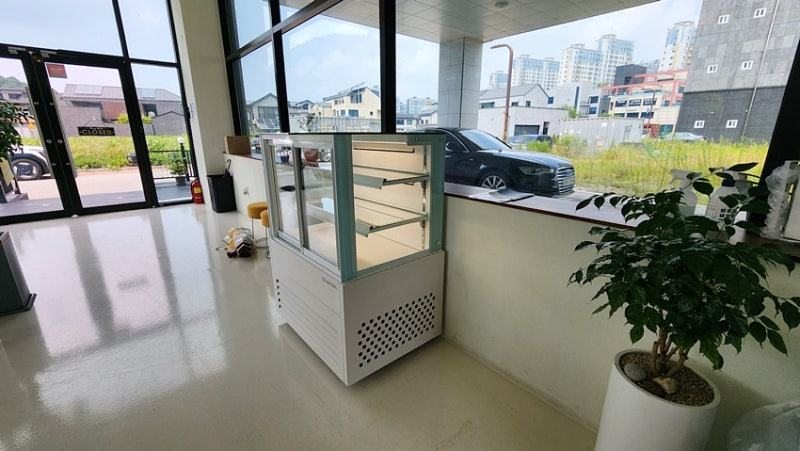
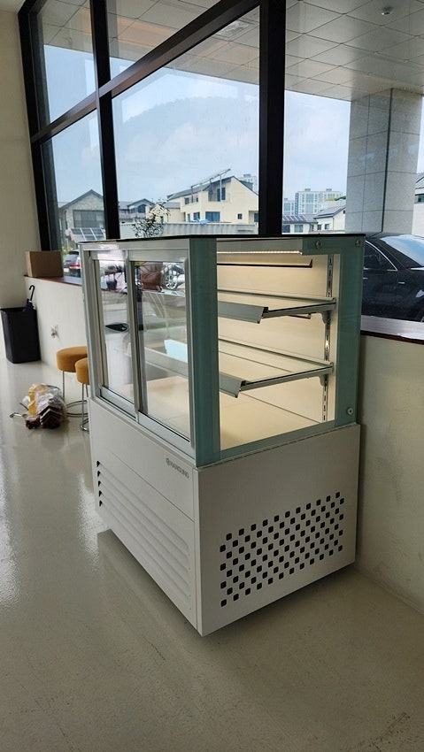
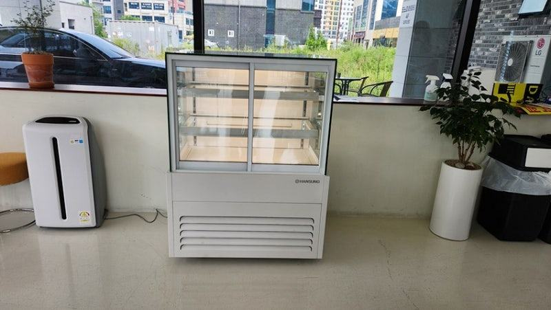
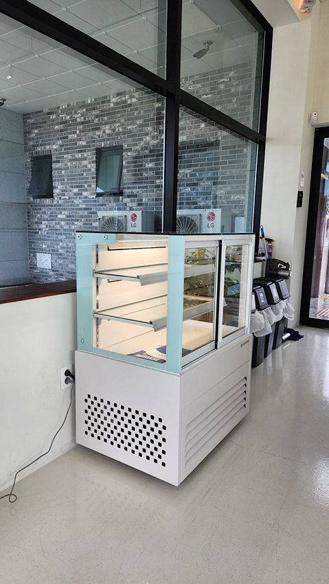
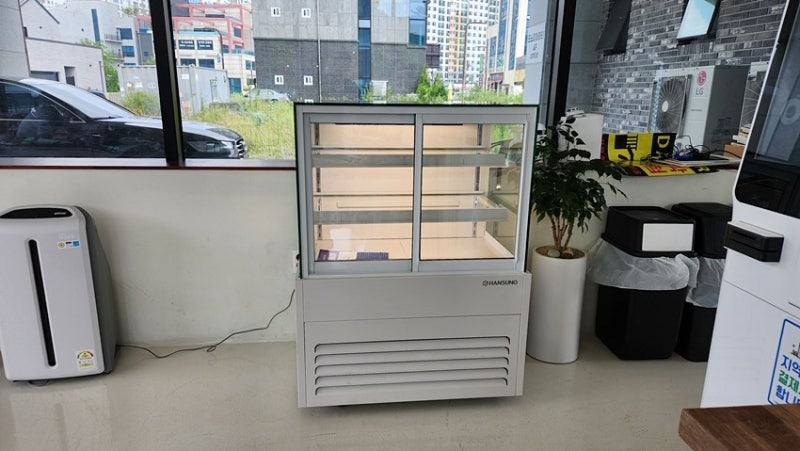
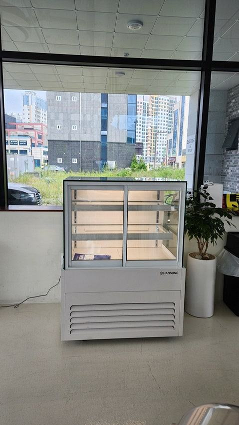
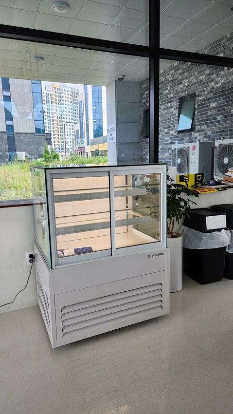

제과쇼케이스
제과쇼케이스 결로, 유리에 김이 서리는 진짜 원인과 대처

제과쇼케이스 결로는 쇼케이스 안팎의 온도 차에 매장의 습한 공기가 더해질 때 유리 표면에 물방울이 맺히는 현상입니다. 설치 위치와 매장 습도를 먼저 점검하고, 그래도 반복된다면 결로 방지 열선 유리와 냉기 순환 구조를 갖춘 제품인지 확인해 보셔야 합니다.
안녕하세요. 빵과 디저트가 가장 예쁘게 보이는 진열장을 고민하는 한성쇼케이스입니다.
오후만 되면 쇼케이스 앞유리가 뿌옇게 흐려져서 손님이 케이크를 고르려다 유리를 손으로 닦는 모습, 베이커리 사장님이라면 한 번쯤 보셨을 겁니다.
아침에는 멀쩡하던 유리가 왜 손님이 몰리는 시간에만 흐려지는지 답답하시죠.
제과는 진열이 곧 판매라서, 유리가 흐려지면 생크림의 결이나 타르트의 윤기가 보이지 않아 손이 덜 갑니다.
물방울이 선반 아래로 흘러 빵 포장지가 젖는 일도 생기고요.
오늘은 제과쇼케이스에 결로가 생기는 원인을 매장 환경과 제품 사양으로 나눠 보고, 사장님이 직접 해 볼 수 있는 점검 순서를 정리해 드리겠습니다.
1. 결로가 생기는 원리부터
차가운 음료잔 겉면에 물방울이 맺히는 것과 같은 이치입니다. 쇼케이스 내부는 차갑고 매장 공기는 따뜻하고 습하니, 그 경계인 유리 표면에서 공기 속 수분이 물로 변합니다.
온도 차가 크고 매장 습도가 높을수록 더 쉽게 생깁니다.
제과 매장은 특히 조건이 까다롭습니다. 오븐에서 막 나온 빵의 열기와 수증기, 커피 머신의 스팀, 출입문으로 들어오는 바깥 공기가 모두 쇼케이스 주변에 모이기 때문입니다.
비 오는 날이나 장마철에 유독 심해지는 것도 같은 이유입니다.
- 유리 바깥쪽에 맺히는지, 안쪽에 맺히는지 먼저 구분해 보세요.
- 결로가 심한 시간대와 날씨를 며칠 적어 두면 원인이 보입니다.
2. 설치 위치가 원인인 경우
현장에 가 보면 쇼케이스 바로 옆에 오븐이나 발효기가 있거나, 에어컨 바람이 앞유리를 정면으로 때리는 자리인 경우가 많습니다.
출입문 바로 앞에 놓여 문이 열릴 때마다 바깥 공기가 들이치는 경우도 흔합니다.
이럴 때는 제품을 바꾸기 전에 위치나 바람 방향부터 조정해 보시는 게 순서입니다. 에어컨 날개 방향만 바꿔도 앞유리 상태가 달라지는 매장이 적지 않습니다.
뒷면이 벽에 바짝 붙어 열이 빠지지 못하면 냉각이 무리하게 돌아가 온도 차가 더 커지니, 뒤쪽 공간도 함께 봐 주세요.
- 오븐·발효기·커피 머신과 거리를 띄워 두세요.
- 에어컨 바람이 앞유리로 직접 가지 않게 방향을 돌려 보세요.
- 뒷면과 벽 사이에 열이 빠질 틈이 있는지 확인하세요.


3. 유리 사양과 냉각 방식
위치를 바꿔도 반복된다면 제품 사양을 볼 차례입니다. 습한 매장에서는 유리에 결로 방지 열선이 들어가 있어야 표면 온도가 너무 내려가지 않습니다.
열선이 있는 제품이라도 스위치가 꺼져 있거나 단계가 낮게 설정된 경우가 있으니 먼저 확인해 보세요.
냉각 방식도 영향을 줍니다. 팬으로 냉기를 돌리는 간냉식은 내부 온도가 고르게 유지돼 유리 한쪽만 지나치게 차가워지는 일이 적고, 성에도 덜 낍니다.
생크림 케이크처럼 수분이 많은 디저트를 많이 진열하신다면 이 부분을 꼭 따져 보셔야 합니다.
문 패킹이 낡아 틈이 생겨도 습한 공기가 안으로 들어가 유리 안쪽에 김이 서립니다. 손님이 직접 여닫는 앞문형이라면 패킹 상태를 자주 살펴보세요.
4. 영업 중에 바로 할 수 있는 관리
갓 구운 빵은 충분히 식힌 뒤에 넣어 주세요. 따뜻한 빵이 들어가면 내부에 수증기가 생겨 유리 안쪽이 흐려집니다.
문을 열어 둔 채로 진열을 오래 하는 습관도 내부 습도를 올립니다.
마감 후에는 나이트커버를 덮거나 유리를 마른 천으로 닦아 두면 다음 날 아침 상태가 한결 낫습니다. 물받이와 배수구가 막혀 있으면 습기가 빠지지 못하니 정기적으로 청소해 주세요.
체크리스트
- 결로가 유리 안쪽인지 바깥쪽인지
- 오븐·커피 머신·출입문과의 거리
- 에어컨 바람 방향
- 결로 방지 열선 유무와 설정 단계
- 문 패킹 상태와 배수구 청소
- 빵을 식힌 뒤 진열하는 습관
공간에 맞춰 선반 높이까지 정해 제작한 카페 제과쇼케이스
카페 오픈을 준비하시던 사장님이 제과 진열과 보관을 함께 할 쇼케이스를 문의하신 현장입니다. 직접 방문해 상담한 뒤 원하시는 자리에 맞는 크기로 맞춤 제작을 진행했고, 약속한 일정에 맞춰 소속 직원이 직접 설치했습니다.
프레임은 화이트톤으로 마감해 디저트가 한눈에 들어오도록 했고, 주문하신 대로 선반 높이와 개수를 맞춘 뒤 조명 점검까지 마치고 설치를 끝냈습니다.
진열할 디저트 높이에 맞춰 선반을 잡아 두면 문을 여는 횟수와 시간이 줄어, 결로 관리에도 도움이 됩니다.







자주 묻는 질문
결로 방지 열선을 켜 두면 전기요금이 많이 늘지 않나요?
늘 최고 단계로 둘 필요는 없습니다. 습한 계절이나 결로가 심한 시간대에만 단계를 올리고, 건조한 날에는 낮춰 쓰시면 부담을 줄일 수 있습니다.
유리 안쪽에 김이 서리는데 고장인가요?
안쪽 결로는 문 패킹 틈, 따뜻한 빵 진열, 배수 막힘이 원인인 경우가 많습니다. 이 세 가지를 점검했는데도 계속된다면 냉각 쪽 점검을 받아 보시는 게 좋습니다.
새로 맞출 때 결로를 줄이려면 무엇을 요청해야 하나요?
설치 자리 주변에 오븐이나 출입문이 있는지, 진열할 디저트 종류를 미리 알려 주세요. 그에 맞춰 결로 방지 유리와 냉각 방식, 선반 구성을 함께 안내해 드립니다.
매장 조건에 맞춰 만드는 한성쇼케이스
원하시는 제품 사진과 설치할 공간 사진만 보내 주셔도 매장에 맞는 구성을 추천해 드립니다.
- 전국 240여 개 A/S 전담 센터 운영
- 본사 대량 자재 매입으로 품질 대비 합리적인 가격
- 유럽제·삼성 냉각 콤프레셔 적용
- 국내 최초 쇼케이스 전문 디자이너 상주
매장 폭과 원하는 진열 구성을 알려 주세요. 실측과 견적을 안내해 드립니다.
031-986-2458